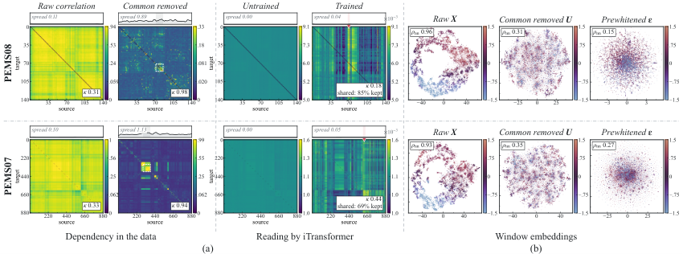

选取理由
近期回看，非当日新增。跨通道注意力看似有效，收益却可能主要来自所有传感器共享的趋势。本文把公共因素估计与目标专属的滞后依赖分开，并提供推理期干预诊断。对多诊断时序而言，先判断模型是否利用了前兆传播，比直接叠加更复杂的融合模块更有价值。
研究背景
由原简报的核心问题、选取理由和相关性整理，不替代原文背景综述。
多变量预测通常把其他通道的加权汇总作为目标通道的补充信息，但共享季节性和全局工况足以显著降低平均误差，因此误差改善不能直接证明模型学到了通道之间的依赖。聚变诊断同样含有电流爬升、全局密度和操作阶段等公共变化。本文的原始实验来自交通、空气质量等规则时序，值得回看的是其诊断跨变量读取是否真正区分目标的实验方法。
核心问题
同一组归一化读取权重同时承载公共成分和稀疏先行信号时，强公共因素会支配来源比较。论文研究如何分别估计公共变化与来源创新，避免注意力图看似有结构，实际只在重复平均信号。这里的依赖是条件预测信息，不等同于对真实系统的因果干预效应。
对当前主题的关键意义在于：原始应用领域：交通和空气质量等多变量规则预测。可迁移模块或训练目标：公共因子估计、创新空间滞后读取和推理干预诊断。对应在研问题：P1跨通道高低频信息混淆，P3工况共享量与局部前兆分离。预期计算和显存影响：双路径和来源检索增加计算，低秩公共因子可能减少冗余，需实测，不能由结构推断显存下降。主要失效条件或数据风险：全局前兆被误当公共噪声，跨炮拟合因子造成泄漏，缺失改变滞后估计。最小验证实验：按炮划分固定三个诊断通道，比较原读取、共享读取、均匀读取与训练集拟合预白化，记录预警召回、误报率和P95延迟。
方法与关键创新

原论文图1，数据中的目标专属依赖与模型读取对比，注意力收益可能主要来自共享趋势。
共享成分路径通过周期基表、横截面池化和多个公共因子建立整体预测。创新路径先移除公共成分，再利用来源的领先滞后关系选择和读取信息，最后修正目标预测。论文同时用所有目标共享读取权重、均匀读取、来源创新替换、残差可预测信息等干预区分公共收益与依赖收益。最小创新路径与完整可学习路由分别消融，有助于判断收益来自分离机制还是额外参数。
阅读时需要把方法设计与主要结果一起看：原文报告16个真实数据集，短期和空气质量24个设置中23个取得最佳MSE，相对最强基线平均下降6.1%。这一数字是指定设置的汇总，不是每个数据集都下降6.1%。表IV显示长预测步长的增益来自共享路径，创新修正仅作用于前min(最大滞后,H)步，短期交通中依赖贡献占总收益19%–42%。表V中移除预白化在YRD反而使MSE变化−0.19%，不能宣称所有消融一致改善。
实验结果
原文报告16个真实数据集，短期和空气质量24个设置中23个取得最佳MSE，相对最强基线平均下降6.1%。这一数字是指定设置的汇总，不是每个数据集都下降6.1%。表IV显示长预测步长的增益来自共享路径，创新修正仅作用于前min(最大滞后,H)步，短期交通中依赖贡献占总收益19%–42%。表V中移除预白化在YRD反而使MSE变化−0.19%，不能宣称所有消融一致改善。
局限性
输入为规则采样窗口，未证明真实Δt、异步缺失、多速率统一骨干或百万长度显存界。强公共变化本身可能是破裂前兆，移除后必须有共享路径保留。来源筛选和因子估计需仅在训练部分拟合。论文在NVIDIA L20训练，没有给本课题端到端延迟、峰值显存与跨装置实验。本轮未确认专用代码仓库和正式发表venue，按预印本处理，未独立复现。
总结
优先借用“共享权重仍保留多少收益”的诊断，再决定是否引入双路径预测。
研究相关性与启发
原始应用领域：交通和空气质量等多变量规则预测。可迁移模块或训练目标：公共因子估计、创新空间滞后读取和推理干预诊断。对应在研问题：P1跨通道高低频信息混淆，P3工况共享量与局部前兆分离。预期计算和显存影响：双路径和来源检索增加计算，低秩公共因子可能减少冗余，需实测，不能由结构推断显存下降。主要失效条件或数据风险：全局前兆被误当公共噪声，跨炮拟合因子造成泄漏，缺失改变滞后估计。最小验证实验：按炮划分固定三个诊断通道，比较原读取、共享读取、均匀读取与训练集拟合预白化，记录预警召回、误报率和P95延迟。